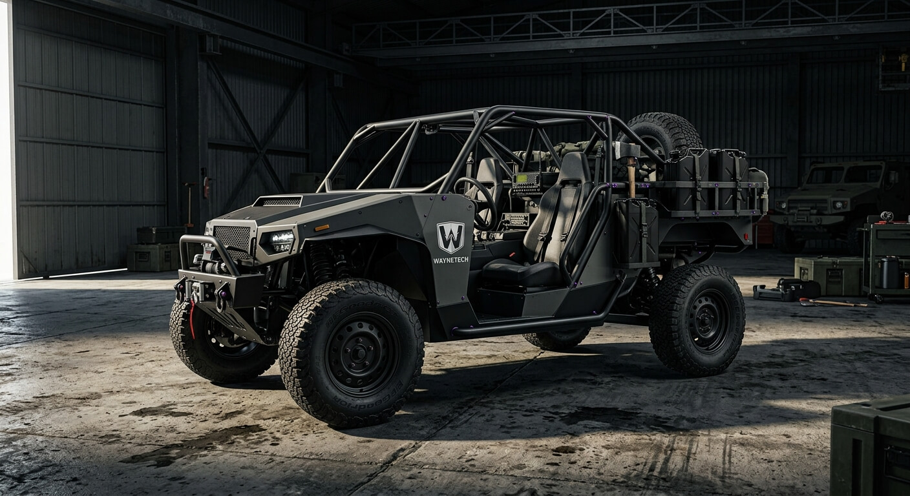
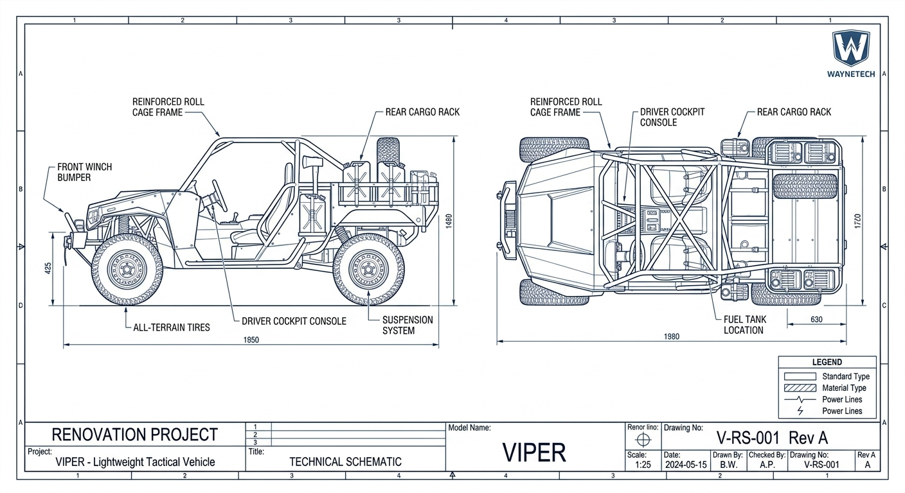

WAYNETECH // DIVISION R&D : VÉHICULES AVANCÉS & MOBILITÉ
Unité tactique tout-terrain // Mobilité tactique légère
Fiche Projet : Viper (Buggy Tactique Bêta-01)
- Classification :
- Document interne sécurisé
- Accès Restreint (Niveau 4)
- Nom de code officiel (B2B) :
- Véhicule d'intervention rapide pour les équipes d'urgence et de sécurisation de sites.
- Usage réel sur le terrain :
- Buggy tout-terrain d'intervention lourdement modifiée, ultra-rapide et entièrement connectée pour les opérations sur tout types de terrains.


Caractéristiques Générales
- Configuration
- Véhicule tactique léger, cage tubulaire ouverte
- Longueur
- 3,85 m
- Largeur
- 1,98 m
- Hauteur (cage incluse)
- 1,72 m
- Masse à vide
- ~1 450 kg
- Charge utile de référence
- ~800 kg
- Places
- 2 (conducteur + passager avant), plateau arrière modulable
- Masse opérationnelle lourde
- ~2250 kg
Motorisation
- Moteur
- 1 × WayneTech TD4 turbodiesel hybride léger
- Puissance visée
- ~340 ch
- Couple maximal
- ~620 Nm
- Transmission
- Intégrale permanente, boîte automatique 8 rapports
- Suspension
- Pneumatique adaptative, compensation de charge
- Réducteur
- Court, engageable manuellement pour franchissement
Performances
- Vitesse maximale visée
- 165 km/h
- 0 à 100 km/h
- ~5,8 s
- Distance de freinage d'urgence
- Optimisée malgré la surcharge
- Comportement post-impact
- Roulage maintenu sur pneus run-flat
- Garde au sol
- 350 mm
- Angle d'attaque/ de fuite
- 48° /42°
- Capacité de guet
- 900 mm
Autonomie & Emploi
- Autonomie routière
- ~650 km
- Autonomie tout-terrain
- ~380 km
- Réserve carburant
- 15 %
- Emploi
- Reconnaissance rapide, intervention, escorte légère
- Usage prévu
- Zone de guerre / terrain compliqué
- Aérotransportable
- Oui (hélicoptère lourd / soute cargo)
Déploiement
- Terrains accidentés, désertiques, forestiers
- Franchissement d'obstacles sans infrastructure
- Largage aéroporté possible avec plateforme dédiée
- Montage/démontage rapide de la cage arrière pour transport compact
- Autonome sans support logistique lourd sur courte durée
Signature / Discrétion
- Peinture mate gris/noir anti-reflet
- Réduction de la signature thermique moteur
- Silhouette basse pour limiter la détection visuelle
- Détection possible par des moyens de surveillance avancés
Electronique Embarquée
- Console de sécurité conducteur dédiée
- Écrans doubles (navigation / diagnostic sécurité)
- Système de filtration HEPA cabine (protection NRBC légère)
- Cloison de séparation blindée (SAFE) entre habitacle avant/arrière
- Caméras périphériques et détection de menace à distance
Cabine Exécutive
- Console de bord tactique numérique
- Navigation GPS/inertielle redondante
- Liaison de données tactique
- Diagnostic embarqué prédictif
- Caméra de recul et capteurs de franchissement
Commandes
- Cage de sécurité renforcée intégrale
- Sièges baquets à harnais 4 points
- Instrumentation numérique simplifiée
- Commandes classiques, priorité au contrôle du conducteur
- Rangements tactiques intégrés
Systèmes
- Architecture électrique 24V renforcée
- Circuits redondants pour l'éclairage et la navigation
- Diagnostic prédictif du groupe motopropulseur
- Modules remplaçables sur le terrain sans outillage lourd
Protection
- Modules remplaçables sur le terrain sans outillage lourd
- Pare-chocs renforcé avec treuil intégré
- Plancher renforcé anti-mine léger (protection basique)
- Réservoir de carburant protégé
- Pas de blindage lourd (véhicule non blindé de série)
Armement
- Configuration standard
- Non armé
- Point d'ancrage disponible
- Support d'arme dédié modulaire arrière (option)
- Armement WayneTech
- Spécialisé, quantité limitée, selon contrat
- Autorisation d'emploi
- Conducteur/agent habilité
Technologies WayneTech
- Fusion — Aide à la navigation et fusion des capteurs de franchissement
- Vector — Gestion avancée de la motricité et de la répartition du couple
- Gestion thermique WayneTech pour composants électronique adaptée aux environnements extrêmes
- Wayne Emergency Mode — Mode de récupération temporaire en cas de panne critique
Communications
- Communications sécurisées chiffrées
- Liaison de données tactique compatible flotte
- Fonctionnement essentiel sans connexion WayneTech
Ecosystème WayneTech : Viper Assistance™
- Diagnostic à distance
- Pièces détachées et certifié
- Maintenance spécialisée sur site
- Formation à la conduite tout-terrain
- Support logistique
Contrôle Des Technologies Sensibles
- Utilisation des fonctions normales par le propriétaire
- Options de tactique avancées soumises à autorisation
- Capacités sensibles verrouillables selon contrat ou statut du client
- Contrôle des technologies propriétaires conservé par WayneTech